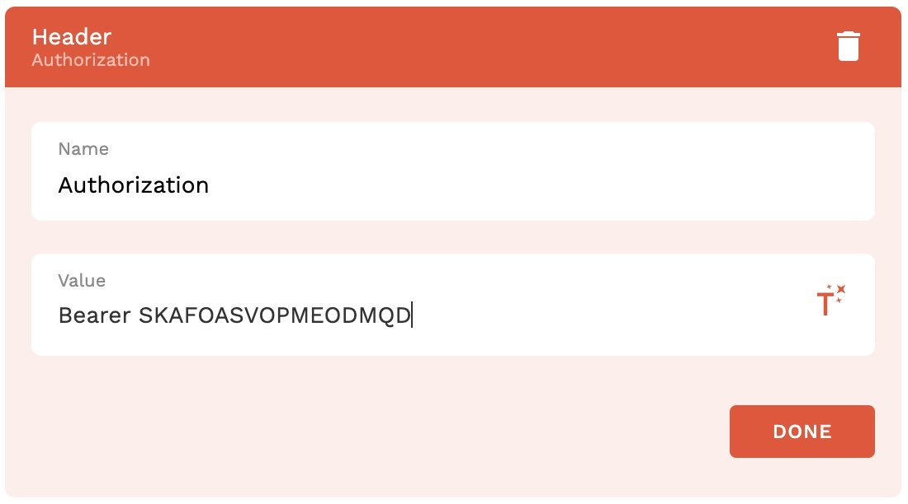
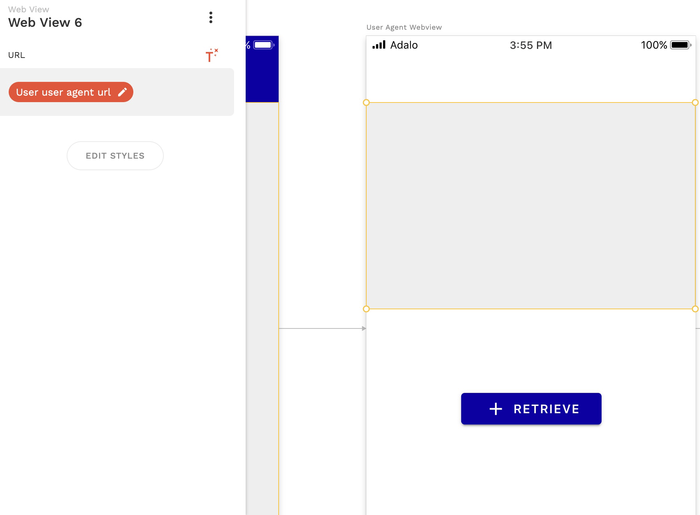
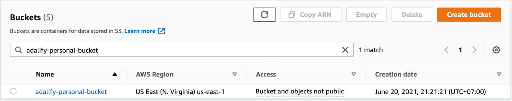
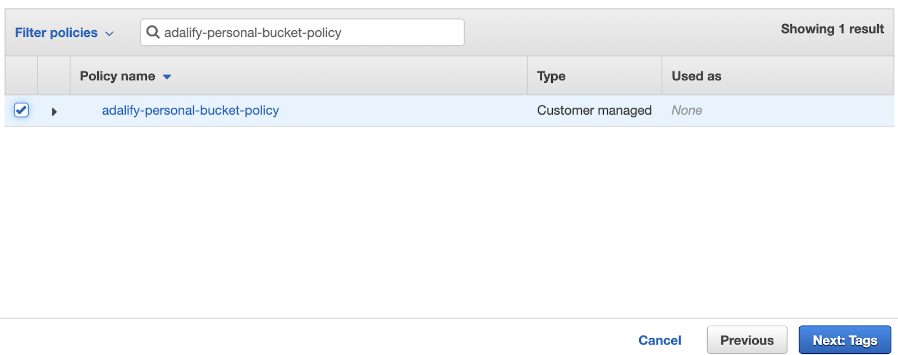
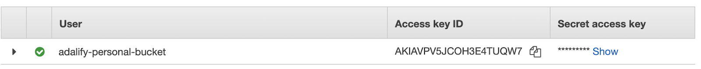
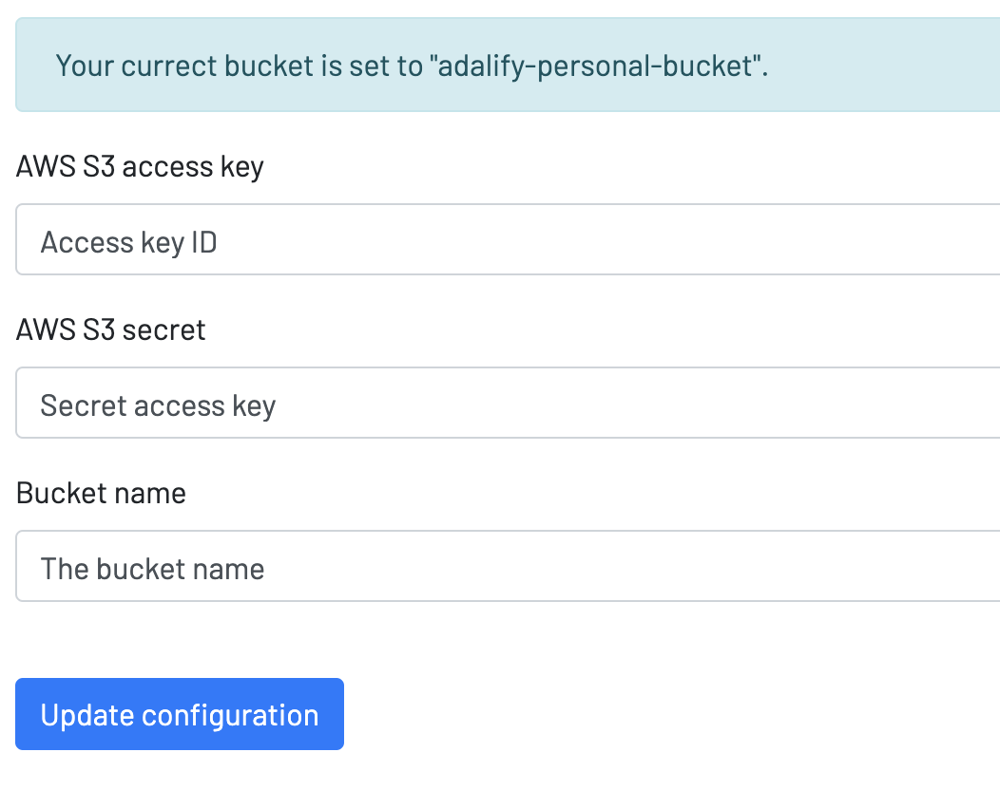
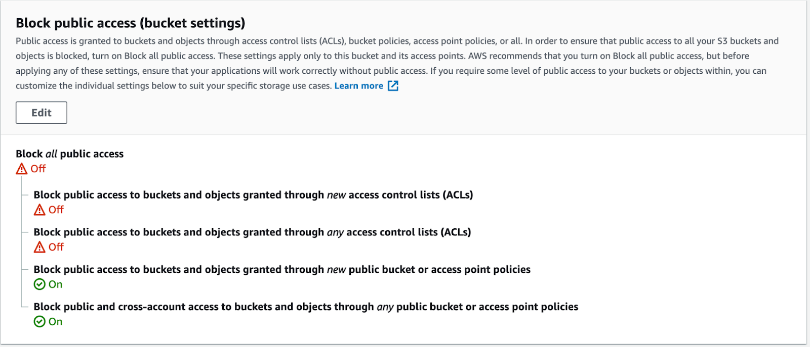

Introduction to Adalify
Welcome to the Adalify documentation. Here you will find everything you need to set up, and use Adalify.
You can read the following documentation or alternatively watch the below video. Please read the common issues seciton below before moving onto the Authorization section.
Common Issues
Note that all endpoint URLs end with a / (not including query string parameters)
For example, https://api.adalify.com/twilio_api/send_sms/ will work, but https://api.adalify.com/twilio_api/send_sms will not.
All required arguments, if not provided, will return a response with the status code 500 and an explanation as to which field is missing.
Copy and Paste
To get characters you need to make a POST call to the following url :
http://api.westeros.com/character/get
Custom actions common mistakes
- Creating query parameters instead of headers
- Creating headers instead of query parameters
- Giving invalid example values
Authorization
You will need an active API key from signing up to Adalify in order to use the APIs and to use the authorization.
Get your API Key
Make an account on Adalify and you will immediately be given your API key. This can be used for 14 days for free, after which you need to hit the subscribe button to keep your API key active.
Authorization in custom actions (Adalo)

Create a Header as above, with the name Authorization and the Value Bearer YOUR-API-KEY
Make sure there are no trailing spaces and there is only one space between Bearer and your API key. If you have any problems try deleting the space and typing it again.
Responses
Below are the responses you might get relating to your API key
"Authentication credentials were not provided”: No header Authorization set
"Provide Adalify token in the header Authorization: Bearer {APIKEY}": Incorrect value format. Must be “Bearer {APIKEY}”
"Could not find an Adalify' user with provided token": Incorrect Adalify API token. Check your token again. Common reasons are there is more than one space between Bearer and the token, and make sure there are no brackets surrounding the API Key.
"Only active members allowed": Your API is inactive. Check your Adalify subscription status or contact our team support@adalify.com
SMS to Twilio
This API lets you connect to your own Twilio account and send SMS from a custom action in your Adalo app. You must have set up your Twilio account correctly first.
Pricing - This is an unlimited API from Adalify and you are not charged for usage. However, Twilio may charge you for usage. Please refer to Twilio pricing
Create Custom Action in Adalo
Type CREATE
Method POST
Endpoint
https://api.adalify.com/twilio_api/send_sms/
Authorization Header
Create the Header parameter as above, switching the example API key for YOUR OWN API KEY
Query Parameters (case sensitive)
twilio_account_id Your Twilio account id (required*)
twilio_auth_tokenYour Twilio authentication token (required*)
to The number to send the message to (required*)
from_ The sent from number (required*)
body The message content
Please notice the underscore in the from_ parameter.
The from_ parameter is a number you have set on your Twilio account. You can't choose any number.
Response
success (Boolean) true for successful request, False otherwise
error message Error explanation when success is False.
Detect Device (User Agent)
Introduction
This API allows you to retrieve the User's device data, such as their operating system and hardware brand. For example, you might want to know if your user is using Android, iOS, or PC.
This is a three-step API.
Step 1 - Our first custom action generates an ID and a webview URL.
Step 2 - We then direct the user to a page with a webview using the URL returned from step 1.
Step 3 - Another custom action retrieves the user's device information.
Step 1
Create Custom Action in Adalo
Create a new custom action on a button in Adalo. The button has a custom action as below:
Type CREATE
Method POST
Endpoint https://api.adalify.com/user_agent/create/
Authorization Header
Create a Header as above, with the name Authorization and the Value Bearer YOUR-API-KEY. Use your own API key, NOT the example key in the image.
Query Parameters
None required
Response Body
None required
success Boolean if the request was successful or not
status String version of success value. Can be either ‘successful’ or ‘failed’.
data.id String Provided unique id which can be retrieved later. null if not provided.
data.useragentinfo User-agent details
data.update_endpoint The endpoint to display with webview
data.retrieve_endpoint The endpoint to retrieve the data
Save outputs to the database
Add another action to the same button to update the logged-in user with the returned information above.
Once you've done this, you can go to step 2
Step 2
On the same button that you created the first custom action, link it to a new page.
On the new page, have a webview.
The URL of the webview should be the returned data.update_endpoint. In the below screenshot I am using magic text to display this, as I have saved the data.update_endpoint to my database under logged in user.

Important
Now, run your app in the previewer, run the first custom action button, which should link you to the webview page. You must run this correctly in your app, and then quit previewer. Then go to your database and copy the data.id that just got saved to the database .
Once you have done that you can continue to Step 3.
Step 3
In this step, we retrieve the user's device information that our webview has collected.
Create a new custom action on a button in Adalo. The button has a custom action as below:
Create Custom action in Adalo
Type CREATE
Method GET
PLEASE NOTE THIS IS GET METHOD NOT POST
Endpoint
https://api.adalify.com/user_agent/retrieve/{id}/
Query Parameters
None required
Response Body
success: Boolean if the request was successful or not
status: String version of success value. Can be either ‘successful’ or ‘failed’.
data.id: String Unique id provided in the creating step
data.user_agent_info: User-agent details - this is a number of returned properties with info about the user's device
Custom Action Input
Once setup, make sure you are feeding into the logged in user > data.id (from first action), as magic text into the custom action.
Setup is complete
File Upload & Storage
For production apps please make sure to use your own S3 bucket. Using the Adalify bucket should be for testing purposes only.
This API allows you to upload files via a webview, to be stored on our servers. Optionally, if you have an Adalify Pro account you can use your own S3 bucket.
There are 2 steps to this API. The first call returns a URL for the file uploader which should be put in the webview. The second API call retrieves the file upload data after the user has uploaded a file.
Pricing - If you are using your own S3 bucket, as we strongly recommend, you must have a pro subscription which is $29 per month. Using the basic plan for the file uploader is for testing only.
Flow
1) Call 'Generate uploader URL' API
2) Save the returned URL to the database
3) Link to new page with webview
4) For the webview, insert the returned URL that you saved on the database
5) User uploads file into webview
6) Another button, e.g. 'Continue' or 'I've finished uploading', makes the second API call, retrieving the file details to save to your database.
Generate Uploader URL
This API returns a URL to the uploader, which should be used in the webview. For each upload, you need to generate a new URL, as each uploader page is specific to that upload.
Create Custom Action in Adalo
Type CREATE
Method POST
Endpoint
api.adalify.com/files/upload/url_generator/
Authorization Header
Create a Header as above, with the name Authorization and the Value Bearer YOUR-API-KEY using your own API key, NOT the example value in the image.
Query Parameters (case sensitive)
max_size_in_bytes: Integer optional max upload size in bytes. For example, to limit the file size to 1MB, set this value to 1048576. To calculate file size, use https://www.mindgems.com/info/file-size/. Not providing max_size_in_bytes will result in no limit of the file being uploaded.
accept_filetype_{number}: max_size_in_bytes: Integer optional max upload size in bytes. For example, to limit the file size to 1MB, set this value to 1048576. To calculate file size, use https://www.mindgems.com/info/file-size/. Not providing max_size_in_bytes will result in no limit of the file being uploaded.
accept_filetype_{number}:
Example options for filetype:
.pdf - any file extension
image/jpeg - any mime type commonly known by browsers
image/* - accept all types of images
video/* - accept all types of video files
audio/* - accept all types of audio files
application/* - accept all types of application files
text/* - accept all types of text files
Response
success: Bool true for successful request, False otherwise, or when the value is not found.
status: String success or failure depending on the request.
data.id: The ID for the file that you are about to upload. You need to save this in your database as it is required for the retrieve file API.
data.upload_url: The URL for the file uploader. Save this to your database and use this URL as a webview for the user to upload a file.
Copy and paste the full response from the custom action and store it! You will need the file ID for the next step.
Retrieve File
Returns the URL of the uploaded file.
You can use this URL for download links, to embed in a webview or image, and for streaming with the PLYR video comp
Before setting up the second part of the action, you must have uploaded a file into the webview! This means you will get full response
Create Custom Action in Adalo
Type CREATE
Method GET
Endpoint
https://api.adalify.com/files/upload/retrieve/{upload_id}/
{upload_id} is the ID returned from the first step. Unlike some of our other APIs, this magic text is placed within the endpoint of the custom action.
IMPORTANT: When setting up your custom action the first time, use b4623c1c-968e-49ba-947e-ba0d5181f514 as your upload ID.
Authorization Header
Create the Header parameter as above, switching the example API key for YOUR OWN API KEY
Query Parameters
Additional query parameters are not required for this API call. You just need your authorization header with API key, and the upload ID (as magic text) in the endpoint.
Response
success: Bool true for successful request, False otherwise, or when the value is not found.
status: String success or failure depending on the request
data.id: The ID for the retrieved file.
data.url: The URL to your file.
Delete Stored File
You may want to do this after the user had downloaded the file, or you have stored it elsewhere, in order to save storage space on your plan.
However you should not really be running out of space unless you are in production, in which case you should be using your own S3 bucket
This API works for both Adalify's storage, and if you are using your own personal S3 bucket.
Create Custom Action in Adalo
Type CREATE
Method DELETE
Endpoint
https://api.adalify.com/files/upload/delete/{upload_id}/
{upload_id} is the ID returned from the first step. Unlike some of our other APIs, this magic text is placed within the endpoint of the custom action.
Authorization Header
Create a Header as above, with the name Authorization and the Value Bearer YOUR-API-KEY. Use your own API key, NOT the example key in the image.
Response
success: Bool true for successful request, False otherwise, or when the value is not found.
status: String success or failure depending on the request.
Using Your Own Amazon S3 Bucket
You must be subscribed to the Adalify Pro plan to use this feature.
By using your own S3 bucket, you will not be charged anything by Adalify for file uploads, storage, or bandwidth. We recommend using your own bucket as described here if you expect to use significant bandwidth or storage.
We recommend creating a new IAM account to use with Adalify.
1) Create a new bucket or skip this step if you wish to use the existing bucket. You can set the bucket to any region. https://s3.console.aws.amazon.com/s3/
2)

3. Create a new IAM account.
a) go to https://console.aws.amazon.com/iam/home.
b) On the left side of the screen, select Users.
c) Click the button Add User.
d) Under Set User Details, provide a new user’s username. This can be anything you’d like.
e) Under Select AWS Access Type, select Programmatic access Enables an access key ID and secret access key for the AWS API, CLI, SDK, and other development tools.
f) Click Next: Permissions
g) Under Set Permissions, select Attach existing policies direct, then select Create Policy.
h) Select the tab JSON and paste the below permissions. Make sure to change the bucket name to your bucket name.
{
"Version": "2012-10-17",
"Statement": [
{
"Effect": "Allow",
"Action":
"s3:GetObject",
"s3:PutObject",
"s3:PutObjectAcl",
"s3:DeleteObject"
],
"Resource": "arn:aws:s3:::YOURBUCKETNAME/*"
},
{v
"Effect": "Allow",
"Action": [
"s3:ListAllMyBuckets",
"s3:GetBucketLocation"
],
"Resource": "arn:aws:s3:::*"
}
]
}
- Click Next: Tags, and Next: Review.
- Name your new policy, then click Create Policy.
- buckeBack to the screen Attach existing policies directly, filter the policy by the new policy name, make sure it is checked, then click Next: Tags.
2)

- Click Next: Review, and finally click Create user.
- You will then see the new account’s Access key ID and Secret access key. These keys will be required when you configure your personal bucket on Adalify’s
2)

Update personal bucket settings on Adalify dashboard.
a) Go to https://www.adalify.com/dashboard/s3_setup/ and put in your Access key ID, Secret access key, and bucket name. Then click Update configuration.
b) If the configuration is successful, you will see the message 'Your current bucket is set to YOUR BUCKET NAME'.

- In the bucket’s Permission tab, scroll down to the bottom until you see the section Cross-origin resource sharing (CORS). Click Edit then past the following value, then click Save Changes. This will allow an upload from Adalify’s domain.
[
{
"AllowedHeaders": [
"*"
],
"AllowedMethods": [
"POST"
],
"AllowedOrigins": [
"https://api.adalify.com",
"https://www.adalify.com"
],
"ExposeHeaders": [],
"MaxAgeSeconds": 3000
},
{
"AllowedHeaders": [
"*"
],
"AllowedMethods":
"GET"
],
"AllowedOrigins": [
"*"
],
"ExposeHeaders": [],
"MaxAgeSeconds": 3000
}
]
- In the Permission tab, under Block public access (bucket settings), uncheck the first two options then click Save changes. If you cannot set the values as shown below, try clicking Block Public Access settings for this account on the left-hand side and make sure the settings are configured as below as well.

All other aspects of using the file upload API are the same. Please follow the other pages in this section to get started.
If you fill in the config settings for your own S3 bucket on Adalify, our API will automatically use your own bucket. If you later wish to use Adalify's storage instead, just delete the config settings on Adalify for your bucket.
Finished
Calendar Links
This API generates URL links for:
-
Google Calendar
-
Yahoo Calendar
-
Outlook Calendar
-
Office 365 Calendar
-
ICS (for Apple devices)
When a user clicks on these links, they will be directed to add an event to the respective calendar.
- ICS link should be used for native iOS calendar.
- ICS link is not widely supported on Android and will also not function correctly in previewer / web browsers
- Yahoo calendar does not always calculate timezone correctly.
- ICS link will only work with an active Adalify subscription
Create Custom Action in Adalo
Type CREATE
Method POST
Endpoint
How-to guides must focus on achieving a practical goal.
https://api.adalify.com/calendar/generate_urls/Authorization Header

Create the Header parameter as above.
Query Parameters (case sensitive)>
title String required The event title
description String optional The event description
location String option The event location
all_day String optional. Whether this event is an all-day event. Set this to any value to make an all-day event.
start String optional Start time in the format YYYY-MM-DD HH:mm:ss. For example, 2021-05-30 10:00:00 will set the start time of the event to 30 May 2021 10:00:00 am UTC. Adalo's No Formatting datetime is also supported. For example 2020-07-31T14:15:00.000Z.
end String optional End time in the format YYYY-MM-DD HH:mm:ss. For example, 2021-05-30 10:00:00 will set the end time of the event to 30 May 2021 10:00:00 am UTC. Adalo's No Formatting datetime is also supported. For example 2020-07-31T14:15:00.000Z.start and end you can use the example date 2021-05-30 10:00:00(You need valid example date to set up your Adalo custom action)
Instead of setting the end time, you can set the duration of the event by providing only one of the below options. If an end is provided, the values below will be ignored:
duration_minute Integer optional The duration of the event in minutes.
duration_hour Integer optional The duration of the event in hours.
duration_day Integer optional The duration of the event in days.
duration_week Integer optional The duration of the event in weeks.
duration_month Integer optional The duration of the event in months.
duration_year Integer optional The duration of the event in years.Response
success Bool true for successful request, False otherwise, or when the value is not found. status String success or failure depending on the request. data Object of urls for each calendar typedata.google Str URL for Google calendar data.outlook Str URL for Outlook data.office Str url for Office data.yahoo Str url for Yahoo data.ics Str URL for ics file data.ics_data Str for HREF value for anchor tag (use this for ICS URL)
Using the Response
data.google,data.outlook, data.office, and data.yahoo are URL links that can be used for Android, previewer, and web apps.
data.ics_data is the URL that should be used for iOS devices. This link will not work correctly outside of iOS native.
String Functions
String functions are used in computer programming languages to manipulate a string or query information about a string (some do both).
Length - find the length of the string
Upper- Makes all letters uppercase
Lower - Makes all letters lowercase
Title - Make the first letter of every word capitalized.
Titlecase - Transform the given string to a title by capitalizing the first letter of each word, except “small words” from the New York Times Manual of Style. This function is different from title function where all the words are transformed.
Casefold - Make all the letters lowercase.
Count - Returns the number of occurrences of a substring in the given string.
Startswith - Check if the text starts with a specified value
Endswith - Check if the text ends with a specified value
Find - Finds the first occurrence of the specified value.
Index - Finds the first occurrence of the specified value.
Isalnum - Check if all the letters are alphanumeric, which are alphabet letters (a-z) and numbers (0-9).
Isalpha - Check if all the letters are alphabet letters, which are a-z and A-Z.
Isdecimal - Check if the text is a decimal
isdigit - Check if the text is a decimal
isidentifier - Check if the text is an identifier. A string is considered a valid identifier if it only contains alphanumeric letters (a-z) and (0-9), or underscores (_)
islower - Check if the string is all lowercase
isupper - Check if the string is all uppercase
isnumeric - Check if the string is all numeric.
isprintable - Check if all the characters are printable, otherwise False. Examples of non-printable characters can be carriage return and line feed
isspace - Check if all the characters are white space characters
istitle - Check if the string is a title
Replace - Return a string where a specified value is replaced with a specified value.
Removespace - Return a string where spaces are removed
rfind - Find the last occurrence of the specified value
Index - Find the last occurrence of the specified value.
Translate - Returns a string where some specified characters are replaced with the character described in a pair of strings
Create Custom Action in Adalo
Type CREATE
Method POST
Authorization
Authorization is the above format for all String Functions
Length:
Returns the length of a string.
Endpoint
https://api.adalify.com/string/length/Query Parameters (case sensitive)
text The text to check (Required*)Response
success Boolean, true for successful request, False otherwisestatus String, success or failureresult Integer, string length
Upper:
Make the first letter of the string uppercase. All other letters lowercase.
Endpoint
https://api.adalify.com/string/upper/Query Parameters (case sensitive)
text The text to transform (Required*)Response
success Bool true for successful request, False otherwisestatus String success or failureresult String the transformed text
Lower:
Make all letters lowercase.
Endpoint
https://api.adalify.com/string/lower/Query Parameters (case sensitive)
text The text to transform (Required*)Response
success Bool true for successful request, False otherwisestatus String success or failureresult String the transformed text
Title:
Make the first letter of every word capitalized.
Endpoint
https://api.adalify.com/string/title/Query Parameters (case sensitive)
text The text to transform (Required*)Response
success Bool true for successful request, False otherwisestatus String success or failureresult String the transformed text
Titlecase:
Transform the given string to a title by capitalizing the first letter of each word, except “small words” from the New York Times Manual of Style. This function is different from the title function where all the words are transformed.
Endpoint
https://api.adalify.com/string/titlecase/Query Parameters (case sensitive)
text The text to transform (Required*)Response
success Bool true for successful request, False otherwisestatus String success or failureresult String the transformed text
Casefold:
Make all the letters lowercase. Here is an explanation from sololern.com “Casefolding is a more aggressive version of lower() that is set up to make many of the more unique Unicode characters more comparable. It is another form of normalizing text that may initially appear to be very different, but it takes characters of many different languages into account. Casefolding is similar to lowercasing but more aggressive because it is intended to remove all case distinctions in a string. For example, the German lowercase letter 'ß' is equivalent to 'ss'. Since it is already lowercase, lower() would do nothing to 'ß', but casefold() converts it to 'ss'.”
Endpoint
https://api.adalify.com/string/casefold/Query Parameters (case sensitive)
text The text to transform (Required*)Response
success Bool true for successful request, False otherwisestatus String success or failureresult String the transformed text
Count:
Returns the number of occurrences of a substring in the given string.
Endpoint
https://api.adalify.com/string/count/Query Parameters (case sensitive)
text String required Text to count the occurrences
substring String required Text to count
start (optional) Int Starting index within the string where the search starts.
end (optional) Int with start Ending index within the string where the search ends.Response
success Bool true for successful request, False otherwisestatus String success or failureresult Integer, the number of occurrences
Startswith:
Check if the text starts with a specified value
Endpoint
https://api.adalify.com/string/startswith/Query Parameters (case sensitive)
text String required Text to search from
value String required Text to search
start Int optional Starting index within the string where the search starts.
end Int optional with start Ending index within the string where the search ends.Response
success Bool true for successful request, False otherwisestatus String success or failureresult Bool true if the text starts with the specified value, False otherwise.
Endswith:
Check if the text ends with a specified value
Endpoint
https://api.adalify.com/string/endswith/Query Parameters (case sensitive)
text String required Text to search from
value String required Text to search
start (optional) Int Starting index within the string where the search starts.
end (optional) Int with start Ending index within the string where the search ends.Response
success Bool true for successful request, False otherwisestatus String success or failureresult Bool true if the text ends with the specified value, False otherwise.
Find:
Finds the first occurrence of the specified value.
Endpoint
https://api.adalify.com/string/find/Query Parameters (case sensitive)
text String required Text to search from
value String required Text to search
start (optional) Int Starting index within the string where the search starts.
end (optional) Int optional with start Ending index within the string where the search ends.Response
success Bool true for successful request, False otherwisestatus String success or failureresult Int index of the first occurrence. -1 if the value is not found
Index:
Finds the first occurrence of the specified value. The difference between Index and Find is that find will return -1 if the value is not found, but Index will return an error.
Endpoint
https://api.adalify.com/string/index/Query Parameters (case sensitive)
text String required Text to search from
value String required Text to search
start (optional) Int Starting index within the string where the search starts.
end (optional) Int optional with start Ending index within the string where the search ends.Response
success Bool true for successful request, False otherwisestatus String success or failureresult Int index of the first occurrence.
Isalnum:
Check if all the letters are alphanumeric, which are alphabet letters (a-z) and numbers (0-9).
Endpoint
https://api.adalify.com/string/isalnum/Query Parameters (case sensitive)
text The text to check (Required*)Response
success Bool true for successful request, False otherwisestatus String success or failureresult Bool True if all characters are alphanumeric, False otherwise.
Isalpha:
Check if all the letters are alphabet letters, which are a-z and A-Z.
Endpoint
https://api.adalify.com/string/isalpha/Query Parameters (case sensitive)
text The text to check (Required*)Response
success Bool true for successful request, False otherwisestatus String success or failureresult Bool True if all characters are all alphabet letters, False otherwise
Isdecimal:
Check if the text is a decimal
Endpoint
https://api.adalify.com/string/isdecimal/Query Parameters (case sensitive)
text The text to check (Required*)Response
success Bool true for successful request, False otherwisestatus String success or failureresult Bool True if the text is a decimal, False otherwise.
Isdigit:
Check if the text is a decimal
Endpoint
https://api.adalify.com/string/isdigit/Query Parameters (case sensitive)
text The text to check (Required*)Response
success Bool true for successful request, False otherwisestatus String success or failureresult Bool True if the text is a decimal, False otherwise.
Isidentifier:
Check if the text is an identifier. A string is considered a valid identifier if it only contains alphanumeric letters (a-z) and (0-9), or underscores (_). A valid identifier cannot start with a number, or contain any spaces.
Endpoint
https://api.adalify.com/string/isidentifier/Query Parameters (case sensitive)
text The text to check (Required*)Response
success Bool true for successful request, False otherwisestatus String success or failureresult Bool True if the text is an identifier, False otherwise.
islower:
Check if the string is all lowercase
Endpoint
https://api.adalify.com/string/islower/Query Parameters (case sensitive)
text The text to check (Required*)Response
success Bool true for successful request, False otherwisestatus String success or failureresult Bool True if the text is all lowercase, False otherwise.
isupper:
Check if the string is all uppercase.
Endpoint
https://api.adalify.com/string/isupper/Query Parameters (case sensitive)
text The text to check (Required*)Response
success Bool true for successful request, False otherwisestatus String success or failureresult Bool True if the text is all uppercase, False otherwise.
isnumeric:
Check if the string is all numeric. "-1" and "1.5" are NOT considered numeric values, because all the characters in the string must be numeric, and the - and the . are not.
Endpoint
https://api.adalify.com/string/isnumeric/Query Parameters (case sensitive)
text The text to check (Required*)Response
success Bool true for successful request, False otherwisestatus String success or failureresult Bool True if all characters are numeric. False otherwise.
isprintable:
Check if all the characters are printable, otherwise False. Examples of non-printable characters can be carriage return and line feed.
Endpoint
https://api.adalify.com/string/isprintable/Query Parameters (case sensitive)
text The text to check (Required*)Response
success Bool true for successful request, False otherwisestatus String success or failureresult Bool True if all characters are printable. False otherwise.
isspace:
Check if all the characters are white space characters.
Endpoint
https://api.adalify.com/string/isspace/Query Parameters (case sensitive)
text The text to check (Required*)Response
success Bool true for successful request, False otherwisestatus String success or failureresult Bool True if all characters are white space. False otherwise.
istitle:
Check if the string is a title. A string is considered a title if all words in a text start with an uppercase letter, AND the rest of the words are lowercase letters, otherwise False.
Endpoint
https://api.adalify.com/string/istitle/Query Parameters (case sensitive)
text The text to check (Required*)Response
success Bool true for successful request, False otherwisestatus String success or failureresult Bool True if text is tilte. False otherwise.
replace:
Return a string where a specified value is replaced with a specified value.
Endpoint
https://api.adalify.com/string/replace/Query Parameters (case sensitive)
text String required Original text to replace the specified value
old String required Text to be replaced
new String to replace with old text with
count (optional) Int, a number specifying how many occurrences of the old value you want to replace. Default is all occurrencesResponse
success Bool true for successful request, False otherwisestatus String, success or failureresult String, the original text after modification
Removespace:
Return a string where spaces are removed.
Endpoint
https://api.adalify.com/string/removespace/Query Parameters (case sensitive)
text String required Original text to remove space
count Int optional A number specifying how many occurrences of the space you want to replace. Default is all occurrencesResponse
success Bool true for successful request, False otherwisestatus String, success or failureresult String, the original text after modification
rfind:
Find the last occurrence of the specified value.
Endpoint
https://api.adalify.com/string/rfind/Query Parameters (case sensitive)
text: String required Text to search the value
value: String required Text to search
start: (optional) Int Starting index within the string where the search starts.
end: (optional) Int with start Ending index within the string where the search ends.Response
success Bool true for successful request, False otherwisestatus String, success or failureresult Int index of the last occurrence. -1 if the value is not found
rIndex:
Find the last occurrence of the specified value. The difference between rindex and rfind is that rfind will return -1 if the value is not found, but rindex will return an error.
Endpoint
https://api.adalify.com/string/rindex/Query Parameters (case sensitive)
text: String required Text to search the value
value: String required Text to search
start: (optional) Int Starting index within the string where the search starts.
end: (optional) Int with start Ending index within the string where the search ends.Response
success Bool true for successful request, False otherwisestatus String, success or failureresult Int index of the last occurrence.
Translate:
Returns a string where some specified characters are replaced with the character described in a pair of strings
Endpoint
https://api.adalify.com/string/translate/Query Parameters (case sensitive)
text: String required Text to perform the replacement
old: String required The letters to be replaced
new: String required The letters to replace the old string in pairs. Must be the same length as Old parameter
remove: String required The letters to be removed from the original textResponse
success Bool true for successful request, False otherwisestatus String, success or failureresult Str transformed original text